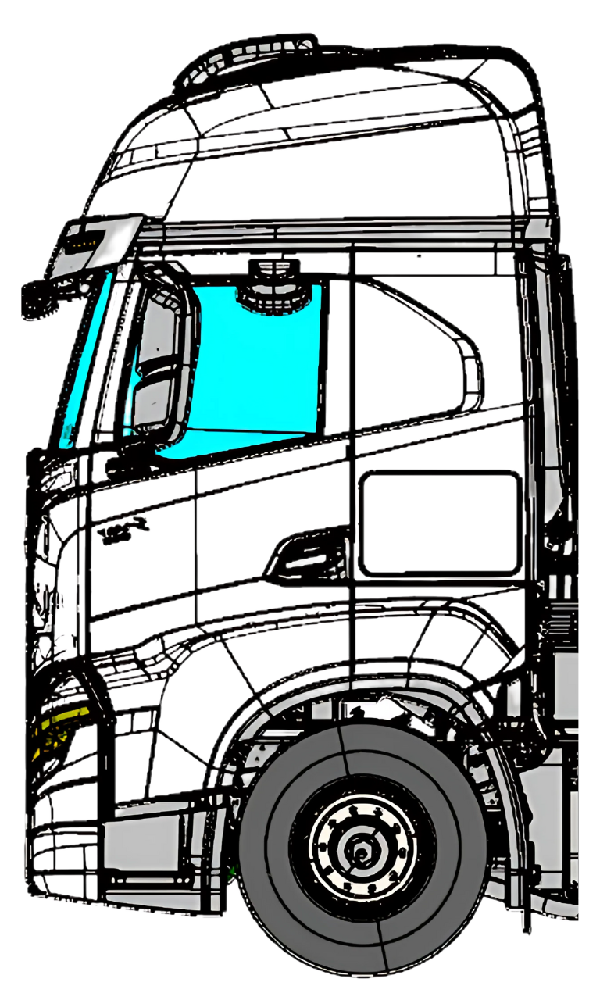

<div class="content">
  <ion-label class="title">Selecione, se houver, pontos de infiltração nos vãos da lateral esquerda.</ion-label>
  <div class="test">
    <div class="image-container">
      
      <ion-button [class.selected]="selected6" class="rounded" style="top: 23%; left: 53%;"
        (click)="select(0)">6</ion-button>
      <ion-button [class.selected]="selected7" class="rounded" style="top: 26%; left: 40%;"
        (click)="select(1)">7</ion-button>
      <ion-button [class.selected]="selected8" class="rounded" style="top: 30%; left: 16%;"
        (click)="select(2)">8</ion-button>
      <ion-button [class.selected]="selected9" class="rounded" style="top: 43%; left: 39%;"
        (click)="select(3)">9</ion-button>
      <ion-button [class.selected]="selected10" class="rounded" style="top: 47%; left: 10%;"
        (click)="select(4)">10</ion-button>
      <ion-button [class.selected]="selected11" class="rounded" style="top: 49%; left: 68%;"
        (click)="select(5)">11</ion-button>
    </div>
  </div>
    <ion-button id="finish-upside-test-button" (click)="finishTest()">Confirmar</ion-button>
</div>
